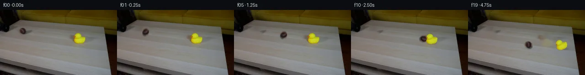

![首帧]()

Round 00
2026-11-04T19:30:10.598316+00:00像素候选变化代码 +218/−0inspection 更新
pixels 2de8ae3e2e628c96 · code 611f8eb1cc414a9d
查看本轮 generate.py 真实 diff
--- previous/generate.py +++ current/generate.py @@ -0,0 +1,218 @@ +from pathlib import Path + +import cv2 +import numpy as np +from PIL import Image, ImageDraw, ImageFont + +import artifact_io + + +ROOT = Path(__file__).resolve().parent +H, W = 144, 256 + + +def smoothstep(v): + v = np.clip(v, 0.0, 1.0) + return v * v * (3.0 - 2.0 * v) + + +def ellipse_alpha(cx, cy, rx, ry, feather=1.5): + yy, xx = np.mgrid[:H, :W] + q = np.sqrt(((xx - cx) / rx) ** 2 + ((yy - cy) / ry) ** 2) + return np.clip((1.0 - q) * max(rx, ry) / feather + 0.5, 0.0, 1.0).astype(np.float32) + + +def object_masks(source): + """Create conservative mattes around the two measured source objects.""" + # The soft ball footprint measured in frame 00 is approximately 17 x 16 px. + ball_shape = ellipse_alpha(50.0, 47.0, 9.5, 8.5, 1.65) + # Suppress pixels that clearly belong to the pale tabletop while retaining + # the ball's antialiased brown/gray edge. + b = source.astype(np.float32) + local_darkness = np.clip((145.0 - b.mean(axis=2)) / 78.0, 0.0, 1.0) + brownness = np.clip((b[:, :, 0] - b[:, :, 2] + 23.0) / 65.0, 0.0, 1.0) + ball = ball_shape * np.clip(0.26 + 0.90 * local_darkness + 0.12 * brownness, 0.0, 1.0) + + # Hand-measured anatomical support keeps the similarly colored couch out + # of the duck matte. Color confidence retains the original soft boundary. + body = ellipse_alpha(174.2, 65.7, 13.7, 8.1, 1.25) + head = ellipse_alpha(170.6, 57.3, 7.4, 7.1, 1.15) + beak = ellipse_alpha(163.5, 59.7, 4.4, 2.6, 0.95) + support = np.maximum.reduce([body, head, beak]) + r, g, bl = [b[:, :, i] for i in range(3)] + yellow = np.minimum((r - bl - 47.0) / 75.0, (g - bl - 35.0) / 78.0) + yellow = smoothstep(np.clip(yellow, 0.0, 1.0)) + # Strongly colored core plus a small edge allowance inside the silhouette. + duck = support * np.clip(0.08 + 1.10 * yellow, 0.0, 1.0) + duck[support < 0.025] = 0.0 + return ball.astype(np.float32), duck.astype(np.float32) + + +def inpaint(source, alpha, radius): + mask = (alpha > 0.025).astype(np.uint8) * 255 + kernel = cv2.getStructuringElement(cv2.MORPH_ELLIPSE, (5, 5)) + mask = cv2.dilate(mask, kernel, iterations=1) + return cv2.inpaint(source, mask, radius, cv2.INPAINT_TELEA) + + +def affine_about(src_xy, dst_xy, degrees=0.0, scale=1.0): + sx, sy = src_xy + dx, dy = dst_xy + theta = np.deg2rad(degrees) + c, s = np.cos(theta) * scale, np.sin(theta) * scale + # Forward transform in image coordinates. + return np.array( + [[c, -s, dx - c * sx + s * sy], + [s, c, dy - s * sx - c * sy]], dtype=np.float32 + ) + + +def transformed_rgba(source, alpha, matrix): + a = cv2.warpAffine(alpha, matrix, (W, H), flags=cv2.INTER_CUBIC, + borderMode=cv2.BORDER_CONSTANT, borderValue=0) + a = np.clip(a, 0.0, 1.0) + premul = source.astype(np.float32) * alpha[:, :, None] + p = cv2.warpAffine(premul, matrix, (W, H), flags=cv2.INTER_CUBIC, + borderMode=cv2.BORDER_CONSTANT, borderValue=0) + p = np.maximum(p, 0.0) + rgb = p / np.maximum(a[:, :, None], 1e-5) + return np.clip(rgb, 0.0, 255.0), a + + +def composite(canvas, rgb, alpha): + out = canvas.astype(np.float32) + out = rgb * alpha[:, :, None] + out * (1.0 - alpha[:, :, None]) + return np.clip(out, 0.0, 255.0) + + … diff truncated; 131 more lines …